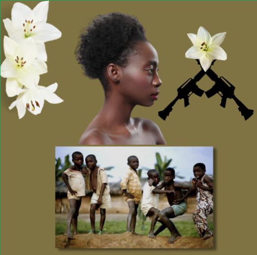
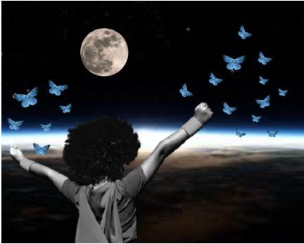
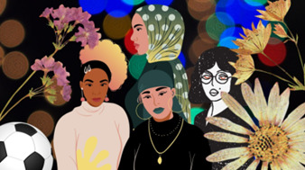

Gaby Varela
|  |  |
|---|---|
| Sarah de Oliveira Silva | Maria Luiza Oliveira Silva |
A principal intenção da obra é ressaltar o cotidiano das pessoas negras, ainda mais as crianças, onde há a grande presença de armas, ressaltando a ação policial e criminal dentro de favelas, onde a maioria das pessoas são negras, por isso há, além do racismo, apenas pessoas negras na foto. Onde há uma mulher, possivelmente representando a mãe destas crianças, destacada na foto como se estivesse tentando protegê-las, deduzindo isso pelo contraste de tamanho na imagem, e essa obra me leva a refletir: será que tal mãe não iria querer um outro lugar para que seu filho vivesse? Que talvez o cotidiano dessas crianças não fosse tão turbulento? Que tem medo, quase todo dia, de que seu filho possa morrer a qualquer momento por tal cotidiano? E, além do mais, qual a representação do dia das crianças que essa obra passou? |
Como a artista original, Gaby Varela, fala muito sobre os Orixás além de denunciar o racismo, acredito que o 1º se aplique a essa obra pois parece ser algo mais místico. Parece ser a Orixá Oxum, deusa da fertilidade, representada na obra tanto pela flor de lótus quanto pela mulher grávida, além de que Oxum muito comumente é representada junto de lagos. Já as montanhas, lua e sol juntos na imagem, podem estar sendo usadas para representar a força dessa fertilidade, desse poder da natureza tão presente em Oxum, já que o eclipse muitas vezes é usado para simbolizar a ampliação dos poderes da natureza e as montanhas estão repletas de árvores, animais, vida. |
 |
 |
|---|---|
| Bruna Romeiro e Leticcia Medeiros | Milena do Nascimento Rocha |
Nesta obra, temos a representação de uma mulher negra sobrevoando no céu estrelado, passando entre a visão do observador da obra e a lua, como um eclipse. As asas geralmente significam a libertação de algo, de alguma amarra, e a lua pode estar representando a passagem de uma etapa da vida ou de um plano para outro. Ou seja, pode estar representando tanto a mudança da etapa da vida, se livrando de amarras antigas, quanto a mudança do plano físico para o espiritual. E tal eclipse pode estar sendo usado para destacar essa mudança. |
Essa obra pode ser interpretada como alguém se conectando com seu eu interior, como pode-se ver pela pessoa meditando em preto enquanto há outra pessoa de branco parecendo relaxada dentro de si. As flores reafirmam essa imagem pois podem passar a sensação de calma, de algo belo, algo relaxado. |
|  |  |
|---|---|
| Camilla Lúcia Lopes e Osmar Silva de Souza |
Ivan Carlos do Nascimento e Maria Vanessa Silva |
A obra acima pode ser interpretada como para libertar a sua criança interior, ver a vida com olhos curiosos pode ajudar nisso. A criança é muito usada para representar ingenuidade, inocência e curiosidade ao ver as coisas, juntando esse símbolo às borboletas, usadas para representar a liberdade, entende-se que pode estar passando uma mensagem de que devemos encarar a vida com um ar mais curioso, se divertir e tentar nos livrar de coisas que nos prendam de ‘voar’, do jeito que a criança está observando o horizonte de nosso planeta. E há um contraste simbólico na foto, mostrando a Terra, representando o plano físico, e mostrando a lua e o espaço, representando o plano espiritual. |
A obra é muito baseada na estética, representa 4 mulheres com estilo vintage, apresentando uma brincadeira com cores vibrantes, característica da moda dos anos 50, além de roupas mais minimalistas, com poucos detalhes. Além de ter um contraste entre as flores, já que são cores complementares. |